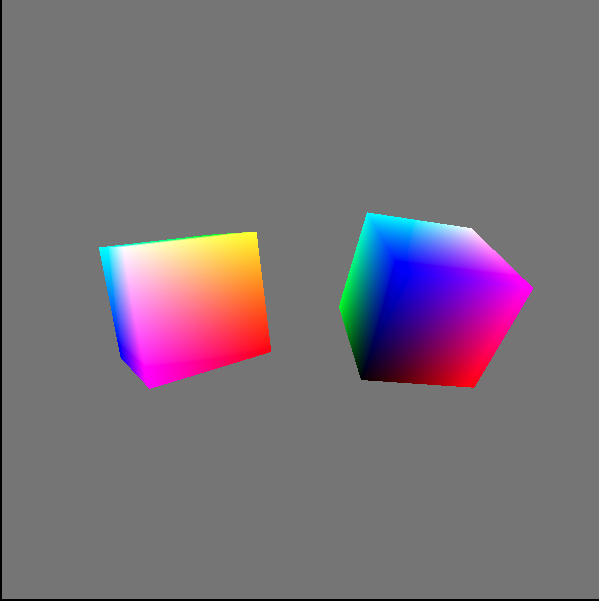
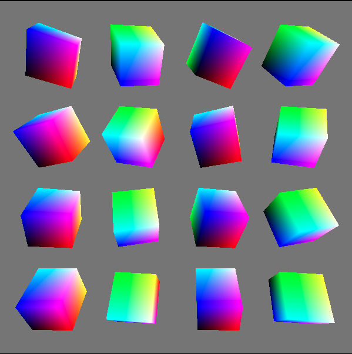

大家好，本文学习Chrome->webgpu-samplers->twoCubes和instancedCube示例。
这两个示例都与“rotatingCube”示例差不多。建议大家先学习该示例，再学习本文的两个示例
上一篇博文：
WebGPU学习（六）：学习“rotatingCube”示例
下一篇博文：
WebGPU学习（八）：学习“texturedCube”示例
该示例绘制了两个立方体。
与“rotatingCube”示例相比，该示例增加了以下的内容：
下面，我们打开twoCubes.ts文件，依次来看下新增内容：
因为只有一个ubo，所以只有一个uniform block，代码与rotatingCube示例相同：
const vertexShaderGLSL = `#version 450
layout(set = 0, binding = 0) uniform Uniforms {
mat4 modelViewProjectionMatrix;
} uniforms;
...
void main() {
gl_Position = uniforms.modelViewProjectionMatrix * position;
...
}
`;代码如下：
const matrixSize = 4 * 16; // BYTES_PER_ELEMENT(4) * matrix length(4 * 4 = 16)
const offset = 256; // uniformBindGroup offset must be 256-byte aligned
const uniformBufferSize = offset + matrixSize;
const uniformBuffer = device.createBuffer({
size: uniformBufferSize,
usage: GPUBufferUsage.UNIFORM | GPUBufferUsage.COPY_DST,
});uniform buffer要保存两个mvp矩阵的数据，但是它们不能连续存放，它们的起始位置必须为256的倍数，所以uniform buffer实际的内存布局为：
0-63:第一个mvp矩阵
64-255:0（占位）
256-319:第二个mvp矩阵
uniform buffer的size为256+64=320
创建两个uniform bind group，通过指定offset和size，对应到同一个uniform buffer：
const uniformBindGroup1 = device.createBindGroup({
layout: uniformsBindGroupLayout,
bindings: [{
binding: 0,
resource: {
buffer: uniformBuffer,
offset: 0,
size: matrixSize
}
}],
});
const uniformBindGroup2 = device.createBindGroup({
layout: uniformsBindGroupLayout,
bindings: [{
binding: 0,
resource: {
buffer: uniformBuffer,
offset: offset,
size: matrixSize
}
}]
});代码如下：
//因为是固定相机，所以只需要计算一次projection矩阵
const aspect = Math.abs(canvas.width / canvas.height);
let projectionMatrix = mat4.create();
mat4.perspective(projectionMatrix, (2 * Math.PI) / 5, aspect, 1, 100.0);
...
let modelMatrix1 = mat4.create();
mat4.translate(modelMatrix1, modelMatrix1, vec3.fromValues(-2, 0, 0));
let modelMatrix2 = mat4.create();
mat4.translate(modelMatrix2, modelMatrix2, vec3.fromValues(2, 0, 0));
//创建两个mvp矩阵
let modelViewProjectionMatrix1 = mat4.create();
let modelViewProjectionMatrix2 = mat4.create();
//因为是固定相机，所以只需要计算一次view矩阵
let viewMatrix = mat4.create();
mat4.translate(viewMatrix, viewMatrix, vec3.fromValues(0, 0, -7));
let tmpMat41 = mat4.create();
let tmpMat42 = mat4.create();相关代码如下所示：
function updateTransformationMatrix() {
let now = Date.now() / 1000;
mat4.rotate(tmpMat41, modelMatrix1, 1, vec3.fromValues(Math.sin(now), Math.cos(now), 0));
mat4.rotate(tmpMat42, modelMatrix2, 1, vec3.fromValues(Math.cos(now), Math.sin(now), 0));
mat4.multiply(modelViewProjectionMatrix1, viewMatrix, tmpMat41);
mat4.multiply(modelViewProjectionMatrix1, projectionMatrix, modelViewProjectionMatrix1);
mat4.multiply(modelViewProjectionMatrix2, viewMatrix, tmpMat42);
mat4.multiply(modelViewProjectionMatrix2, projectionMatrix, modelViewProjectionMatrix2);
}
return function frame() {
updateTransformationMatrix();
...
uniformBuffer.setSubData(0, modelViewProjectionMatrix1);
uniformBuffer.setSubData(offset, modelViewProjectionMatrix2);
...
}updateTransformationMatrix函数更新两个mvp矩阵；
调用两次setSubData，分别将更新后的mvp矩阵数据更新到同一个uniform buffer中。
代码如下：
return function frame() {
...
const passEncoder = commandEncoder.beginRenderPass(renderPassDescriptor);
...
passEncoder.setBindGroup(0, uniformBindGroup1);
passEncoder.draw(36, 1, 0, 0);
passEncoder.setBindGroup(0, uniformBindGroup2);
passEncoder.draw(36, 1, 0, 0);
passEncoder.endPass();
...
}第一次draw，绘制第一个cube，设置对应的uniformBindGroup1；
第二次draw，绘制第二个cube，设置对应的uniformBindGroup2。

该示例使用instance技术，通过一次draw，绘制了多个立方体实例。
与“rotatingCube”示例相比，该示例增加了以下的内容：
下面，我们打开instancedCube.ts文件，依次来看下新增内容：
代码如下：
const vertexShaderGLSL = `#version 450
//总共16个实例
#define MAX_NUM_INSTANCES 16
layout(set = 0, binding = 0) uniform Uniforms {
//ubo包含mvp矩阵数组，数组长度为16
mat4 modelViewProjectionMatrix[MAX_NUM_INSTANCES];
} uniforms;
layout(location = 0) in vec4 position;
layout(location = 1) in vec4 color;
...
void main() {
//使用gl_InstanceIndex取到当前实例的序号（0-15），通过它获取对应的mvp矩阵
gl_Position = uniforms.modelViewProjectionMatrix[gl_InstanceIndex] * position;
...
}`;代码如下：
//16个立方体的排列顺序是x方向4个、y方向4个
const xCount = 4;
const yCount = 4;
const numInstances = xCount * yCount;
const matrixFloatCount = 16;
// BYTES_PER_ELEMENT(4) * matrix length(4 * 4 = 16)
const matrixSize = 4 * matrixFloatCount;
const uniformBufferSize = numInstances * matrixSize;
const uniformBuffer = device.createBuffer({
size: uniformBufferSize,
usage: GPUBufferUsage.UNIFORM | GPUBufferUsage.COPY_DST,
});这里与twoCubes不同的是，不同实例的mvp矩阵的数据是连续存放的，所以uniform buffer的size为numInstances（16个）* matrixSize。
只创建一个：
const uniformBindGroup = device.createBindGroup({
layout: uniformsBindGroupLayout,
bindings: [{
binding: 0,
resource: {
buffer: uniformBuffer,
}
}],
});代码如下：
//因为是固定相机，所以只需要计算一次projection矩阵
const aspect = Math.abs(canvas.width / canvas.height);
let projectionMatrix = mat4.create();
mat4.perspective(projectionMatrix, (2 * Math.PI) / 5, aspect, 1, 100.0);
...
let modelMatrices = new Array(numInstances);
//mvpMatricesData用来依次存放所有立方体实例的mvp矩阵数据
let mvpMatricesData = new Float32Array(matrixFloatCount * numInstances);
let step = 4.0;
let m = 0;
//准备modelMatrices数据
for (let x = 0; x < xCount; x++) {
for (let y = 0; y < yCount; y++) {
modelMatrices[m] = mat4.create();
mat4.translate(modelMatrices[m], modelMatrices[m], vec3.fromValues(
step * (x - xCount / 2 + 0.5),
step * (y - yCount / 2 + 0.5),
0
));
m++;
}
}
//因为是固定相机，所以只需要计算一次view矩阵
let viewMatrix = mat4.create();
mat4.translate(viewMatrix, viewMatrix, vec3.fromValues(0, 0, -12));
let tmpMat4 = mat4.create();相关代码如下所示：
function updateTransformationMatrix() {
let now = Date.now() / 1000;
let m = 0, i = 0;
for (let x = 0; x < xCount; x++) {
for (let y = 0; y < yCount; y++) {
mat4.rotate(tmpMat4, modelMatrices[i], 1, vec3.fromValues(Math.sin((x + 0.5) * now), Math.cos((y + 0.5) * now), 0));
mat4.multiply(tmpMat4, viewMatrix, tmpMat4);
mat4.multiply(tmpMat4, projectionMatrix, tmpMat4);
mvpMatricesData.set(tmpMat4, m);
i++;
m += matrixFloatCount;
}
}
}
return function frame() {
updateTransformationMatrix();
...
uniformBuffer.setSubData(0, mvpMatricesData);
...
}updateTransformationMatrix函数更新mvpMatricesData；
调用一次setSubData，将更新后的mvpMatricesData设置到uniform buffer中。
代码如下：
return function frame() {
...
const passEncoder = commandEncoder.beginRenderPass(renderPassDescriptor);
...
//设置对应的uniformBindGroup
passEncoder.setBindGroup(0, uniformBindGroup);
//指定实例个数为numInstances
passEncoder.draw(36, numInstances, 0, 0);
...
}